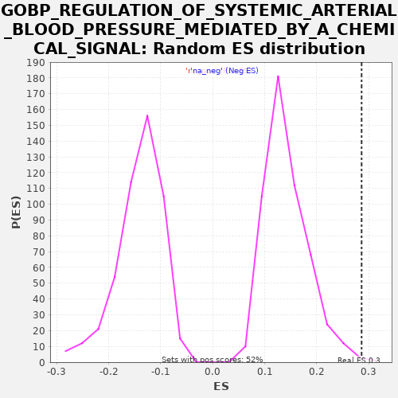

| | | Dataset | A_X_tradeoff |
| Phenotype | NoPhenotypeAvailable |
| Upregulated in class | na_pos |
| GeneSet | GOBP_REGULATION_OF_SYSTEMIC_ARTERIAL_BLOOD_PRESSURE_MEDIATED_BY_A_CHEMICAL_SIGNAL |
| Enrichment Score (ES) | 0.2861263 |
| Normalized Enrichment Score (NES) | 2.018038 |
| Nominal p-value | 0.0019379845 |
| FDR q-value | 0.24414341 |
| FWER p-Value | 1.0 |
Table: GSEA Results Summary
 Fig 1: Enrichment plot: GOBP_REGULATION_OF_SYSTEMIC_ARTERIAL_BLOOD_PRESSURE_MEDIATED_BY_A_CHEMICAL_SIGNAL
Fig 1: Enrichment plot: GOBP_REGULATION_OF_SYSTEMIC_ARTERIAL_BLOOD_PRESSURE_MEDIATED_BY_A_CHEMICAL_SIGNAL
Profile of the Running ES Score & Positions of GeneSet Members on the Rank Ordered List
| SYMBOL | RANK IN GENE LIST | RANK METRIC SCORE | RUNNING ES | CORE ENRICHMENT | | 1 | ADRA1B | 188 | -0.001 | 0.0189 | Yes |
| 2 | ACE2 | 259 | -0.001 | 0.0439 | Yes |
| 3 | MME | 634 | -0.004 | 0.0532 | Yes |
| 4 | ATP6AP2 | 779 | -0.004 | 0.0743 | Yes |
| 5 | SUCNR1 | 853 | -0.005 | 0.0991 | Yes |
| 6 | ADRA1D | 1051 | -0.006 | 0.1176 | Yes |
| 7 | ADRB3 | 1373 | -0.007 | 0.1296 | Yes |
| 8 | OXTR | 1930 | -0.011 | 0.1295 | Yes |
| 9 | AGT | 2017 | -0.011 | 0.1537 | Yes |
| 10 | SOD2 | 2385 | -0.013 | 0.1634 | Yes |
| 11 | ADRB1 | 2579 | -0.014 | 0.1820 | Yes |
| 12 | HSD11B2 | 2660 | -0.015 | 0.2064 | Yes |
| 13 | SERPINF2 | 3873 | -0.023 | 0.1726 | Yes |
| 14 | EDN1 | 3894 | -0.024 | 0.2001 | Yes |
| 15 | AVPR1A | 4591 | -0.030 | 0.1929 | Yes |
| 16 | CORIN | 5287 | -0.037 | 0.1856 | Yes |
| 17 | PCSK5 | 5769 | -0.042 | 0.1894 | Yes |
| 18 | F2RL1 | 6767 | -0.055 | 0.1667 | Yes |
| 19 | AVPR2 | 6838 | -0.056 | 0.1916 | Yes |
| 20 | NOX1 | 6863 | -0.056 | 0.2190 | Yes |
| 21 | F2R | 7534 | -0.066 | 0.2130 | Yes |
| 22 | ADRB2 | 8109 | -0.075 | 0.2121 | Yes |
| 23 | CTSZ | 8451 | -0.081 | 0.2231 | Yes |
| 24 | SLC2A5 | 8822 | -0.087 | 0.2326 | Yes |
| 25 | EDN2 | 9314 | -0.096 | 0.2359 | Yes |
| 26 | PDE4D | 10013 | -0.109 | 0.2285 | Yes |
| 27 | EDN3 | 10057 | -0.110 | 0.2548 | Yes |
| 28 | NOS3 | 10145 | -0.112 | 0.2789 | Yes |
| 29 | CTSG | 10615 | -0.122 | 0.2834 | Yes |
| 30 | ACE | 11117 | -0.134 | 0.2861 | Yes |
| 31 | ECE1 | 11940 | -0.155 | 0.2724 | No |
| 32 | AOPEP | 14403 | -0.232 | 0.1741 | No |
| 33 | TPM1 | 18769 | -0.653 | -0.0221 | No |
| 34 | RASL10B | 19008 | -0.776 | -0.0058 | No |
| 35 | ENPEP | 19218 | -0.992 | 0.0121 | No |
Table: GSEA details [plain text format]

Fig 2: GOBP_REGULATION_OF_SYSTEMIC_ARTERIAL_BLOOD_PRESSURE_MEDIATED_BY_A_CHEMICAL_SIGNAL: Random ES distribution
Gene set null distribution of ES for GOBP_REGULATION_OF_SYSTEMIC_ARTERIAL_BLOOD_PRESSURE_MEDIATED_BY_A_CHEMICAL_SIGNAL